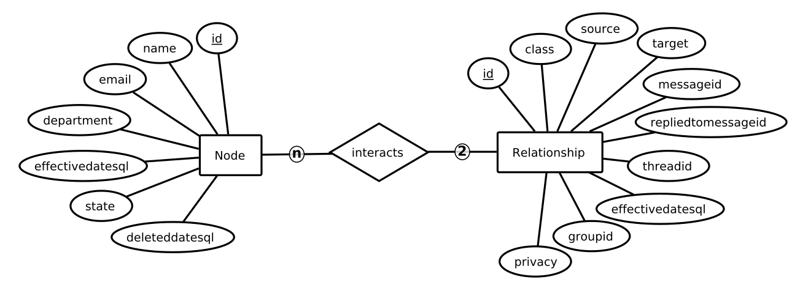
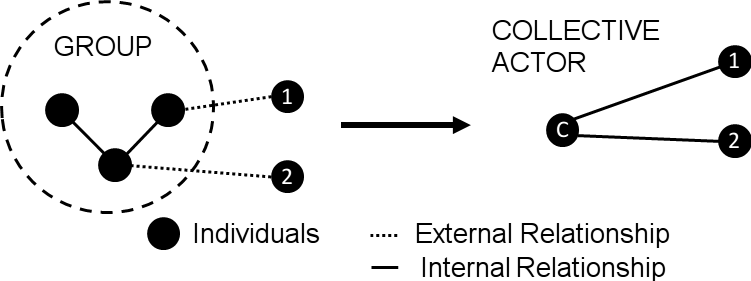

I want to measure group metrics in the context of Enterprise Social Networks and interpret it against the theoretical underpinnings. For this cause Swoop provided me with a Yammer data set.
In the following I describe the organisation Swoop and their needs and I describe the Enterprise Social Network software Yammer, which is the source of the data. Specifically I look into the features of Yammer and how the structure of the data set looks like. In a next step I explain my research approach for creating the metric repository and provide an overview on how I propose to measure the identified metrics for groups.
Swoop is an Australian organisation based in Sydney, founded by Cai and Mariannae Kjaer and Dr Laurence Lock Lee in the year 2014. With a team of ten people they are working to help people become better collaborators.
Swoop provides a unique platform for Social Network Analytics that gives individuals, teams, communities and executives insights into how they work together. It is the leading Social Network Analysis platform and presents a diverse set of valuable social network visualisation tools.
As an organisation Swoop passionately believes in the power of collaboration and people networks to get work done. By analysing data from a variety of sources they provide employees and management with insights to make informed and evidence-based decisions about collaboration and the health of social networks.
Their product is the result of more than 10 years of consulting experience in mapping organisational networks. Based on more than 100 projects the founders have identified the most valuable metrics that help organisations drive collaborative business performance.
The targeted market is global and attracts a rapidly growing customer base in the US, Europe and Australia. Global top customers of Swoop include but are not limited to: Yum! Brands, the owner of KFC, which is linking disparate employees across their many outlets by using Swoop's platform. Telstra, with more than 40,000 employees, is among the top five companies listed on the Australian Stock Exchange.
To gain a better understanding of the networks usage and to identify highly performing users, Swoop's platform evaluates data in five levels:
(1) Enterprise -- uses data from the entire network, (2) Groups -- uses data from groups, (3) Topics -- uses data from one or multiple topics, (4) Business Unit -- uses data from a business unit and (5) Personal -- uses data from an individual user.
Based on the used data, Swoop calculates different metrics for each level and the individuals from the particular level. The metrics are visualised in an online frontend for users to see. The visualisation includes the number of interactions that have taken place on the given level, e.g. the number of posts, replies or likes, and the network activity, e.g. activity per user, response rate, or the ratio of public/private messages. Typical visualisation of these metrics includes tables and graphs. Except for the personal level, the platform identifies key players.
Currently, Swoop wants to add metrics on the enterpise and group level. Swoop's and my goal is to identify key groups based on metrics from the latest scientifc publications. These key groups and their metrics are to be visualised in a web frontend using Swoop's technology stack. The data for the analysis is sourced from the Enterprise Social Network Yammer, which is used by Swoop's customers[^swoop3].
http://www.swoopanalytics.com/
Yammer is an enterprise social networking service used within organisations as part of Microsoft's Office365 suite. The company Yammer was founded in 2008 by David Snacks and acquired by Microsoft in 2012. More than 70% of Fortune 500 corporations employ the Yammer platform in their organisation. According to Gartner, Microsoft is the leading vendor of 2015 for social sotware in the workplace with this product[^gart]. The platform is accessed via webinterface and the domain of the user's email is used to bind one to the community. For example the email "test@uni-sydney.edu" would be assigned to the "uni-sydney.edu" community as the communities are based on domains.
Yammer is used to connect employees across an organisation. The focus is on the discussion of ideas, sharing of updates, and crowdsourcing of answers from coworkers around the globe. "Yammer gives your team a faster, smarter way to connect and collaborate across your company" according to Microsoft's product page. In general, the goal is to share knowledge across the organisation while integrating well with other Office365 products.
The functionality of Yammer includes a public timeline in the domain community, the opportunity to create public and private groups as well as to create threads and initiate discussions in domains or groups. Users reply to threads, react on likes and mentions and can vote in polls. Private instant messaging and sharing documents with other users is possible.
https://blogs.office.com/2015/10/28/gartner-recognizes-microsoft-as-a-leader-in-the-2015-magic-quadrant-for-social-software-in-the-workplace-for-seven-years-running/
https://products.office.com/en-us/yammer/yammer-overview
All user actions are persisted in the Yammer backend. Swoop retrieves this data via Yammer's application programming interface and stores it in their own database. The part of the database, which is relevant for me is depicted in Figure 1.

The Node entity represents a user in the network and it has 7 relevant attributes, that I use in my analysis.
The attribute id is a numerical primary key, the attributes name, email and department are of type text and describe the user.
effectivedatesql is the creation date of the user account.
state is the current state of the account and can have on of the following values: soft_delete, active, external.
Based on the state the user can either be an active member of the community, an external user, that has access to the network or a user with a deleted account.
If the account is deleted, the attribute deleteddatesql contains the date of the deletion.
Users in the social network can interact via five classes of communication with each other.
All interactions are described by the entity Relationship.
Each interaction is given a unique primary key called id.
All interactions are part of a particular thread, identified by the attribute threadid.
The class of the interaction is stored in the attribute class and can have one of five values: Reply, Like, Post, Notification or Mention.
A Post is the first message of a thread and a Reply is a response to a Post i.e. the second, third or later message in a thread.
Notification and Mention interactions are always part of a Post or Reply.
They are used to notify other users of the particular message.
A Like can be given to any message as a form of acknowledgement without actually creating a textual message.
While an interaction is identified by the id attribute, the message is identified by messageìd.ite
This allows it, to attach Notification and Mention interactions to a message, but store them as separate interactions in the database.
It should be noted, that while messages can contain multiple interactions of class Notification and Mention, they can only have one of either Reply or Post interaction.
The source attribute identifies the source Node entity, which authored an interaction.
The target attribute identifies the target Node entity, to which the interaction is directed.
effctivedatesql is the creation date of the interaction and privacy describes the publicy of an interaction, which can be of value Public or Private.
The groupid attribute identifies the group in which the interaction took place and thus is important for the group analysis.
The different classes used in Swoop's date structure can be found in the literature. Viol et al. (2016) distinguish classes of relationships, e.g. posts and likes, into information seeking, information sending and info receiving types of content.
Swoop provides anonymised data, that means all attributes related to message content or personal user information are left blank. For reasons of relevancy and visibility in the Figure 1 the following attributes were left out:
It is possible to discover distinct behavioural dimensions without having to evaluate message content (Viol et al., 2016). While the metrics in the metric repository in section metric-repository take into account metrics based on message content, they cannot be considered in the prototype due to lack of data.
My aim is to create a reusable metric repository containing all metrics, that have been proposed in the literature until the end of 2016. This metric repository includes the interpretation of each metric and its calculation schema. Therefore, it can be used as a resource for developing software systems that analyse the Social Capital of Enterprise Social Networks. Based on the metric repository I build a prototypical web platform, that presents group metrics from Enterprise Social Network data.
Riemer and colleagues published articles on this topic, which I use as a starting point for the collection of metrics. I look at their publications and the publications of their co-authors with the latest papers being released in 2016. Starting from these papers I perform a backwards search to identify further literature on the topic of Enterprise Social Networks and their metrics. The main sources that I use for the metric repository, are Smith et al. (2009), Freeman et al. (1977), Hacker et al. (2015), Viol et al. (2016), Berger et al. (2014), Wasserman et al. (1994), Scott et al. (2012), Newman et al. (2010) and Angeletou et al. (2011). If required, additional background information is retrieved from secondary sources.
Having identified the metrics, I discuss their possible interpretations against the backdrop of Social Capital theory. For the theoretical background on Social Capital, I started with Riemer et al. (2005), Adler et al. (2002), Burt et al. (2001), Coleman et al. (1988) and Granovetter et al. (1973) as they are main works on the Social Capital theory.
The software prototype puts an emphasis on providing automated calculations of the metrics. Thus, I implement a backend system, which can calculate and store all metrics without user interaction. The analysis results are published via a web service. A web frontend consumes this web service and provides up to date visualisation of the data. The visualisation design is based on the practical guidelines described in the IBCS Standard. It emerged from the academic works of Tufte et al. (2001), Minto et al. (2003), Few et al. (2006), Shneiderman et al. (1996) and Brinton et al. (1914) and was edited by Hichert et al. (2011).
http://www.ibcs-a.org/standards
The metric repository is a general reusable metric repository, that is not specifically adapted to group metrics. It contains ego-centric metrics, that are calculated for individual actors and global metrics, that are calculated for the entire network. My goal is to apply these general metrics to groups, while I utilise both the ego-centric metrics and global metrics. By using ego-centric and global metric, I measure the internal perspective (Structural Holes theory) and the external perspective (Closure theory) as described by Borgatti et al. (1998) and Burt et al. (2001).
The global metrics are well suited to measure a group's internal perspective of Social Capital. For the analysis of a particular group, I filter out all interactions that do not take place within said group. The result is, that only the internal communication of the group is left. I use this communication to calculate the global metrics for the particular group. From the results of the metric calculation, I can infer conclusions about the internal perspective of Social Capital.

I use the ego-centric metrics to measure a group's external perspective of Social Capital. Since the ego-centric metrics are not adapted to groups, they cannot be calculated for groups without preparation. To overcome this issue, I propose to model the groups as collective actors based on the Social Capital theory in section social capital. According to Adler et al. (2002) individuals can be grouped together to form a collective actor. For collective actors the same set of measures can be used as for individuals (Borgatti et al., 1998).
My approach is illustrated in Figure 2. I take all users within a particular group and merge them to a new node, which is the collective actor representing the group.
All incoming and outgoing interactions from the original users are redirected to the new collective actor. All internal interactions of the particular group are filtered out, so only external interactions are left. I use the external interactions of the collective actor to calculate the ego-centric metrics for the group. From the results of the metric calculation, I infer conclusions about the external perspective of Social Capital.
With my approach, both the internal and external perspective of Social Capital can be measured. Based on Burt's (2001) complementary theory, both perspectives are taken into account to determine the performance of groups.